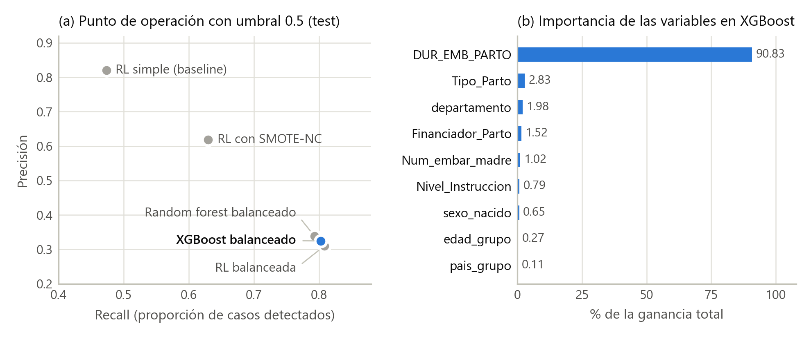
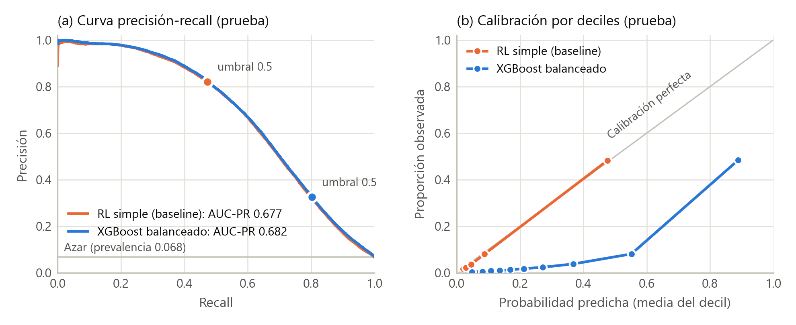

Jair Aguilera · Luis Araujo · Nilton Condori · Pedro Vilcayauri
Facultad de Ciencias e Ingeniería, Pontificia Universidad Católica del Perú
Inteligencia Artificial Aplicada (1INF62) · Semestre 2026-2
Resumen. El bajo peso al nacer (menos de 2500 g) afectó al 6.38 % de los nacimientos registrados en el Perú entre 2015 y 2025. Este trabajo compara cinco clasificadores tomados de la literatura (regresión logística simple como baseline, regresión logística balanceada, regresión logística con SMOTE-NC, random forest balanceado y XGBoost) para predecir el bajo peso con 9 variables del Certificado de Nacido Vivo (CNV) del Ministerio de Salud, conocidas al momento del parto y antes del pesaje. Con 4.76 millones de registros, los modelos se ajustan con los nacimientos de 2015–2023 y se evalúan una sola vez con los de 2024–2025. XGBoost obtiene la mejor discriminación (AUC-ROC 0.913; AUC-PR 0.682), apenas por encima del baseline (0.908; 0.677): los cinco modelos ordenan el riesgo casi igual, y lo que más los distingue es el punto de operación con el umbral 0.5. XGBoost balanceado detecta el 80 % de los casos con 2.1 falsas alarmas por caso detectado; el baseline, el 47 % con 0.2. La duración del embarazo concentra el 91 % de la importancia del modelo: el límite está en la información que registra el CNV más que en el algoritmo.
Palabras clave: bajo peso al nacer; aprendizaje automático; XGBoost; desbalance de clases; registros administrativos; Perú.
El bajo peso al nacer, definido por la Organización Mundial de la Salud como un peso menor de 2500 g, se asocia con mayor morbilidad y mortalidad neonatal y con problemas de salud a largo plazo (World Health Organization, 2014). En el Perú, cada nacimiento genera un Certificado de Nacido Vivo (CNV), un registro administrativo nacional que el Ministerio de Salud (MINSA) publica como datos abiertos y que rara vez se ha usado para construir modelos predictivos.
Este trabajo evalúa si los modelos de aprendizaje automático propuestos en la literatura pueden identificar a los recién nacidos con bajo peso a partir del CNV, y cuál funciona mejor. Hay dos dificultades: la clase de interés es poco frecuente (un caso por cada 15 nacimientos) y la variable más informativa, la duración del embarazo, se registra al momento del parto. Por eso la tarea se plantea como la identificación, al nacer y antes del pesaje, de los recién nacidos que pueden necesitar atención especial, y no como una predicción prenatal. El trabajo aporta una selección de variables con criterios explícitos, una comparación de cinco modelos con un protocolo común y una partición temporal, y un análisis de por qué un modelo funciona mejor y del costo de cada punto de operación.
Se analizaron cuatro estudios revisados por pares sobre el bajo peso o el peso al nacer, con datos distintos del CNV (Tabla 1). Almeida et al. (2026) usaron el registro de nacidos vivos de São Paulo, el más parecido al CNV por ser poblacional y administrativo: la regresión logística con pesos de clase superó al random forest, y concluyen que los modelos simples rinden igual o mejor en datos poblacionales y que el balanceo es necesario cuando el desenlace es raro. Khan et al. (2022) compararon 30 algoritmos y obtuvieron la mejor clasificación con regresión logística y sobremuestreo SMOTE (Chawla et al., 2002) aplicado solo al entrenamiento. Ranjbar et al. (2023) evaluaron ocho algoritmos: XGBoost fue el mejor modelo global, y la edad gestacional y el antecedente de bajo peso, los predictores más importantes. Liu et al. (2022) estimaron el peso al nacer con ocho modelos de regresión y también hallaron que la edad gestacional es el predictor principal. De esta revisión se tomaron los modelos a implementar, dos formas de tratar el desbalance (pesos de clase y SMOTE) y el umbral de 0.5 por defecto.
| Estudio | Datos | Prevalencia | Modelos | Mejor resultado reportado |
|---|---|---|---|---|
| Almeida et al. (2026) | Registro SINASC, São Paulo (Brasil); 2.5 millones de nacidos vivos | 9.5 % | RL y RF, con y sin pesos de clase | RL balanceada: AUC 0.85, recall 0.69 |
| Khan et al. (2022) | Cohorte de tres hospitales (EAU); 821 madres | 10.8 % | 30 algoritmos; SMOTE | RL con SMOTE: accuracy 0.90, F1 ponderado 0.89 |
| Ranjbar et al. (2023) | Red IMaN Net (Irán); 8 853 partos | 14.5 % | 8 algoritmos | XGBoost: AUROC 0.79, F1 0.77; red neuronal: AUROC 0.86 |
| Liu et al. (2022) | Cohorte PKUBC-T (China); 4 754 pares madre-hijo | — | 8 modelos de regresión del peso | SVR y ensamble de votación: RMSE de 351 a 375 g |
Se usó el registro de Certificados de Nacido Vivo del MINSA, publicado en la Plataforma Nacional de Datos Abiertos con corte al 30 de noviembre de 2025: 4 874 510 registros y 22 variables de 2015 a 2025 (Ministerio de Salud del Perú, 2025). La variable objetivo vale 1 si el peso es menor de 2500 g; tras eliminar 3 024 registros sin peso válido, la prevalencia es de 6.38 %. El análisis exploratorio evaluó las 22 columnas con seis criterios: validez (que la variable exista antes del pesaje y no describa el parto ni el desenlace), calidad, redundancia, asociación propia con el bajo peso condicionada a la duración del embarazo, costo en filas perdidas y uso. Se seleccionaron 9 variables: duración del embarazo en semanas, tipo de parto (único o múltiple), departamento de residencia, grupo de edad de la madre, número de embarazos, nivel de instrucción, financiador del parto, sexo del recién nacido y país de origen de la madre. Se excluyeron las variables que se definen durante el parto o miden al recién nacido (como la talla o quién atendió el parto), las de baja calidad (estado civil, hijos fallecidos y abortos previos) y una redundante (hijos vivos). La duración del embarazo domina: por sí sola alcanza un AUC de 0.89, frente a 0.58 o menos de cualquier otra variable.
Se repararon 388 filas con separadores corruptos, los códigos de faltante y los valores fuera de rango se convirtieron en faltantes, y se conservaron los casos completos (4 764 960 registros, el 97.81 %). Las 7 variables categóricas se codificaron con one-hot y las 2 numéricas se estandarizaron (53 columnas), ajustando el preprocesador solo con el entrenamiento. Como la prevalencia aumentó en los últimos años mientras la capacidad discriminante de la duración del embarazo se mantuvo estable, se usó una partición temporal: entrenamiento (3 237 829 registros) y validación (809 458) con 2015–2023, al azar y estratificados (6.32 % de bajo peso), y prueba con 2024–2025 (717 673 registros, 6.81 %), usada una sola vez por modelo.
Se implementaron cinco modelos con scikit-learn (Pedregosa et al., 2011) y XGBoost (Chen y Guestrin, 2016), cada uno en su propio notebook (Tabla 2): una regresión logística sin tratamiento del desbalance (baseline); una con pesos de clase inversos a la frecuencia, como en Almeida et al. (2026); una con sobremuestreo SMOTE-NC, la variante de SMOTE para variables categóricas, aplicado solo al entrenamiento como en Khan et al. (2022); un random forest (Breiman, 2001) con pesos de clase; y XGBoost, el mejor modelo de Ranjbar et al. (2023), que elige el balanceo (scale_pos_weight) en su grilla. Los hiperparámetros se eligieron por AUC-PR en validación: las combinaciones a menos de 0.001 del mejor valor se consideraron empatadas y se prefirió la más simple. En XGBoost, el número de árboles se fijó con early stopping (hasta 2000 árboles, con parada tras 50 sin mejora en validación).
| Modelo | Desbalance | Grilla | Elegido | AUC-PR val. |
|---|---|---|---|---|
| RL simple (baseline) | Ninguno | Sin ajuste (C = 1, L2) | — | 0.6666 |
| RL balanceada | Pesos de clase | C de 10−5 a 1 × penalización L1/L2 (12) | L2, C = 10−4 | 0.6655 |
| RL con SMOTE-NC | Sobremuestreo | Proporción 0.25/0.5 × C 10−4/10−3 × L1/L2 (8) | 0.25, L2, C = 10−4 | 0.6659 |
| Random forest balanceado | Pesos de clase | Hoja mínima 10/50/200 × columnas por corte √p/0.5 × filas por árbol 0.1/0.3 (12) | 50, 0.5, 0.3; 50 árboles | 0.6697 |
| XGBoost balanceado | scale_pos_weight 1/14.8 | Profundidad 4/6/8 × min_child_weight 1/100 × balanceo (12) | 4, 100, 14.8; 917 árboles | 0.6735 |
Se reportan el AUC-ROC y el AUC-PR, que no dependen del umbral, y la precisión, el recall, el F1 y la accuracy con el umbral de 0.5, sin calibrar, como en los estudios revisados. El AUC-PR es la métrica principal porque la clase es rara: para un clasificador al azar vale la prevalencia (0.068 en la prueba). El modelo final se eligió con un orden fijado de antemano: primero la discriminación (AUC-PR y AUC-ROC), luego el recall, por ser la prioridad clínica, y por último el F1 y la precisión. La accuracy no se usa como criterio: predecir siempre «peso normal» ya da un 93 %.
Los cinco modelos tienen un AUC-ROC de 0.907 a 0.913 y un AUC-PR de 0.677 a 0.682, unas diez veces el del azar (Tabla 3). XGBoost balanceado obtiene los valores más altos en ambas métricas y es el modelo elegido, pero su ventaja es pequeña: 0.005 en AUC-ROC y 0.004 en AUC-PR sobre el baseline, y 0.002 y 0.003 sobre el random forest. La ventaja se repite en validación, donde las 12 combinaciones de XGBoost (AUC-PR de 0.6733 a 0.6740) superan a todos los demás modelos (0.6697 o menos), y se mantiene en el tiempo: el AUC-ROC de XGBoost pasa de 0.909 en validación (2015–2023) a 0.913 en la prueba (2024–2025).
| Modelo | AUC-ROC | AUC-PR | Recall | Precisión | F1 | Accuracy | Detectados | Falsas alarmas |
|---|---|---|---|---|---|---|---|---|
| RL simple (baseline) | 0.908 | 0.677 | 0.473 | 0.820 | 0.600 | 0.957 | 23 144 | 5 067 |
| RL balanceada | 0.908 | 0.677 | 0.809 | 0.310 | 0.449 | 0.865 | 39 548 | 87 893 |
| RL con SMOTE-NC | 0.907 | 0.677 | 0.630 | 0.618 | 0.624 | 0.948 | 30 790 | 19 006 |
| Random forest balanceado | 0.911 | 0.679 | 0.793 | 0.339 | 0.475 | 0.880 | 38 800 | 75 828 |
| XGBoost balanceado | 0.913 | 0.682 | 0.803 | 0.325 | 0.462 | 0.873 | 39 271 | 81 718 |
Con el umbral de 0.5 los modelos se separan mucho más (Figura 1a). El baseline tiene la mayor precisión (0.82) y la mayor accuracy (0.957), pero detecta menos de la mitad de los casos. Los tres modelos balanceados detectan alrededor del 80 % con unas dos falsas alarmas por caso detectado, y SMOTE-NC queda en un punto intermedio, con el mejor F1 (0.62). XGBoost balanceado detecta 39 271 de 48 907 casos con 81 718 falsas alarmas (2.1 por caso detectado); frente a la regresión balanceada, con un recall casi igual, genera unas 6 200 falsas alarmas menos. La Figura 2a muestra que XGBoost y el baseline tienen curvas precisión-recall casi idénticas y que, con el umbral de 0.5, quedan en zonas distintas de esa curva: el balanceo mueve el punto de operación, no la curva. En XGBoost, las versiones con y sin scale_pos_weight difieren en 0.0002 o menos de AUC-PR en validación.

Los modelos balanceados sobreestiman el riesgo: en el decil de mayor riesgo, XGBoost predice en promedio cerca de 0.89 cuando la proporción observada de bajo peso es cercana a 0.48, mientras que el baseline está bien calibrado (Figura 2b). En la importancia por ganancia de XGBoost, la duración del embarazo concentra el 90.8 % del total; le siguen el tipo de parto (2.8 %), el departamento (2.0 %) y el financiador del parto (1.5 %), y las otras cinco variables suman el 2.8 % (Figura 1b).
Por qué XGBoost funcionó mejor. Con el random forest, es uno de los dos modelos no lineales evaluados: sus árboles representan relaciones no lineales e interacciones que la regresión logística, al sumar efectos, no captura. A diferencia del random forest, construye los árboles en secuencia, cada uno corrigiendo los errores de los anteriores; cada corte puede usar las 53 columnas, y el número de árboles se ajusta con early stopping. Esto explica también que su grilla casi no importara: las 12 combinaciones empataron porque el early stopping compensa la profundidad con el número de árboles (de 653 a 917 árboles con profundidad 4 y de 117 a 227 con profundidad 8), y el sobreajuste fue leve (brecha de AUC-PR entre entrenamiento y validación de 0.007 como máximo, frente a 0.021 del random forest con hojas de 10 registros).

Por qué la mejora es tan pequeña. Una sola variable lleva casi toda la señal. La duración del embarazo sola alcanza un AUC de 0.89; con las otras ocho variables la regresión logística llega a 0.908, y XGBoost agrega 0.005 más. Su efecto va en una sola dirección (la tasa de bajo peso pasa de 97.6 % con 31 semanas o menos a 0.8 % con 41 o más), algo que un modelo lineal ya representa bien. El techo lo pone la información del CNV, no el algoritmo.
El desbalance es una decisión de punto de operación. Balancear por pesos o con SMOTE-NC equivale a bajar el umbral: sube el recall a costa de la precisión, sin cambiar el orden de los casos. Con más de 200 000 casos de bajo peso en el entrenamiento, SMOTE-NC no aporta información nueva, a diferencia de Khan et al. (2022), que tenían 89 casos, y fue de los modelos más costosos (cerca de una hora). El balanceo también infla las probabilidades: con scale_pos_weight ≈ 14.8, el modelo estima aproximadamente las odds reales multiplicadas por 14.8, así que habría que recalibrarlas antes de usarlas como riesgo absoluto.
Comparación con la literatura. Como en Ranjbar et al. (2023), XGBoost queda primero y la edad gestacional es el predictor principal, igual que en Khan et al. (2022) y Liu et al. (2022). A diferencia de Almeida et al. (2026), donde el random forest rindió peor que la regresión logística y el balanceo le restó discriminación, aquí los árboles quedan levemente por encima y el balanceo no redujo la discriminación de XGBoost; las cifras no son directamente comparables por las diferencias de población, variables, prevalencia y validación. En la práctica, la elección depende del costo de perder un caso frente al de una falsa alarma: un modelo balanceado detecta el 80 % con unas dos falsas alarmas por caso, mientras que el baseline o SMOTE-NC generan muchas menos alertas. La accuracy confunde: el modelo con la mejor accuracy es el que más casos pierde.
Con 9 variables del CNV, XGBoost balanceado es el modelo con mejor discriminación para identificar el bajo peso al nacer en el Perú (AUC-ROC de 0.913 y AUC-PR de 0.682 en 2024–2025) y detecta el 80 % de los casos. Sin embargo, los cinco modelos discriminan casi igual: la mejora sobre una regresión logística simple es de milésimas, porque la duración del embarazo concentra casi toda la información disponible. Las decisiones con más efecto práctico son el tratamiento del desbalance y el umbral, que fijan el equilibrio entre casos detectados y falsas alarmas. Como trabajo futuro se propone elegir el umbral según el costo clínico de cada error, recalibrar las probabilidades, estimar la incertidumbre de las métricas con bootstrap y enlazar el CNV con registros de control prenatal, para incorporar variables clínicas y predecir antes del parto.
Almeida, A. V. A., Santos, A. O. R., & Nascimento, L. F. C. (2026). Predictive modeling with machine learning for low birth weight in the state of São Paulo: A retrospective population-based study. São Paulo Medical Journal. https://doi.org/10.1590/1516-3180.2025.3373.04052026
Breiman, L. (2001). Random forests. Machine Learning, 45(1), 5–32. https://doi.org/10.1023/A:1010933404324
Chawla, N. V., Bowyer, K. W., Hall, L. O., & Kegelmeyer, W. P. (2002). SMOTE: Synthetic minority over-sampling technique. Journal of Artificial Intelligence Research, 16, 321–357. https://doi.org/10.1613/jair.953
Chen, T., & Guestrin, C. (2016). XGBoost: A scalable tree boosting system. En Proceedings of the 22nd ACM SIGKDD International Conference on Knowledge Discovery and Data Mining (pp. 785–794). https://doi.org/10.1145/2939672.2939785
Khan, W., Zaki, N., Masud, M. M., Ahmad, A., Ali, L., Ali, N., & Ahmed, L. A. (2022). Infant birth weight estimation and low birth weight classification in United Arab Emirates using machine learning algorithms. Scientific Reports, 12, 12110. https://doi.org/10.1038/s41598-022-14393-6
Liu, Z., Han, N., Su, T., Ji, Y., Bao, H., Zhou, S., Luo, S., Wang, H., Liu, J., & Wang, H.-J. (2022). Interpretable machine learning to identify important predictors of birth weight: A prospective cohort study. Frontiers in Pediatrics, 10, 899954. https://doi.org/10.3389/fped.2022.899954
Ministerio de Salud del Perú. (2025). Registros de nacidos vivos en el Perú (2015–2025) [Conjunto de datos]. Plataforma Nacional de Datos Abiertos. https://www.datosabiertos.gob.pe/dataset/registros-de-nacidos-vivos-en-el-perú-2015–2025
Pedregosa, F., Varoquaux, G., Gramfort, A., Michel, V., Thirion, B., Grisel, O., Blondel, M., Prettenhofer, P., Weiss, R., Dubourg, V., Vanderplas, J., Passos, A., Cournapeau, D., Brucher, M., Perrot, M., & Duchesnay, É. (2011). Scikit-learn: Machine learning in Python. Journal of Machine Learning Research, 12, 2825–2830.
Ranjbar, A., Montazeri, F., Farashah, M. V., Mehrnoush, V., Darsareh, F., & Roozbeh, N. (2023). Machine learning-based approach for predicting low birth weight. BMC Pregnancy and Childbirth, 23, 803. https://doi.org/10.1186/s12884-023-06128-w
World Health Organization. (2014). Global nutrition targets 2025: Low birth weight policy brief (WHO/NMH/NHD/14.5). World Health Organization.